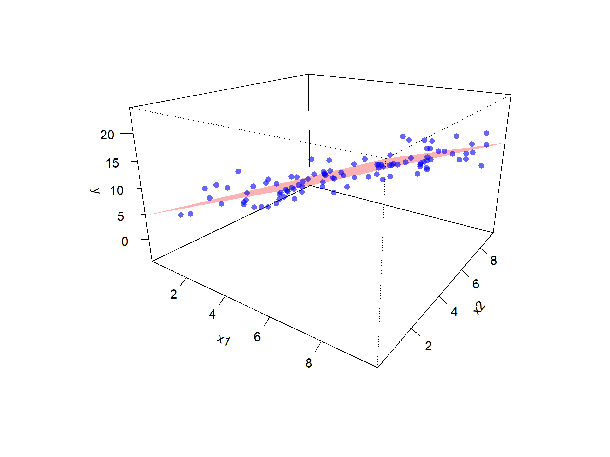
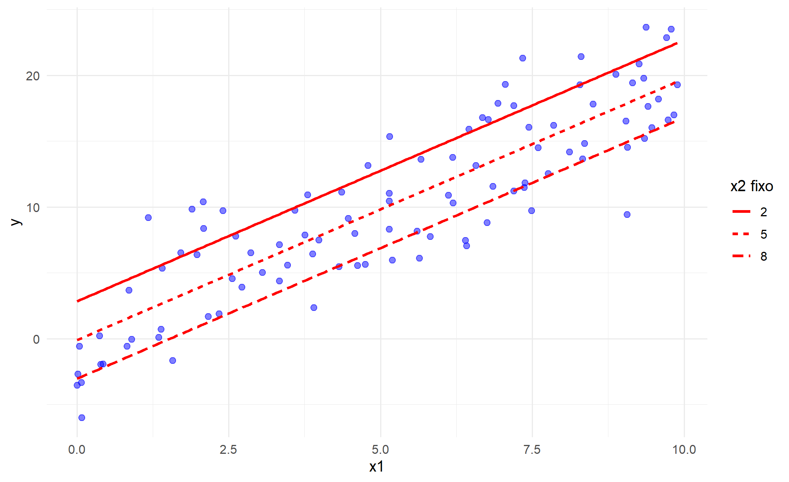
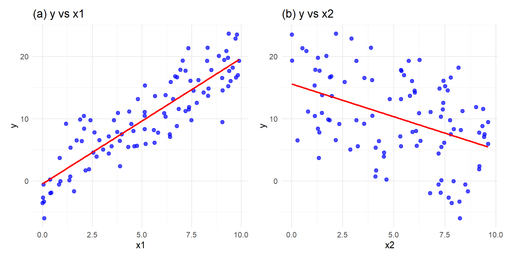

13 Regressão Múltipla
O Modelo de Regressão Linear Múltipla (MRLM) é a generalização natural do Modelo de Regressão Linear Simples (MRLS), conforme apresentado na literatura clássica de modelos lineares (Kutner et al., 2005; Montgomery; Peck; Vining, 2021). Enquanto no MRLS investigamos a relação entre uma única variável explicativa \(X\) e a resposta \(Y\), no MRLM é possível incluir duas ou mais variáveis explicativas simultaneamente, ampliando a capacidade de representar relações mais complexas entre os fatores que influenciam a variável de interesse.
Na prática, raramente um único fator explica um fenômeno. Considere os seguintes exemplos ilustrativos:
- Saúde pública: o risco de desenvolver diabetes pode depender simultaneamente da idade, do índice de massa corporal (IMC), dos hábitos alimentares e da prática de atividade física.
- Educação: o desempenho escolar pode estar relacionado não apenas às horas de estudo, mas também ao nível de escolaridade dos pais e ao acesso a recursos digitais.
- Economia doméstica: os gastos de uma família podem ser explicados pela renda disponível, pelo número de integrantes do domicílio e pelo nível de endividamento.
- Comércio eletrônico: o valor médio gasto por cliente pode ser influenciado por preço, tempo de entrega e avaliações de outros consumidores.
- Ciências ambientais: a qualidade do ar em uma cidade pode ser afetada pelo tráfego de veículos, pela direção e intensidade do vento e pelas condições de umidade.
Esses exemplos mostram que considerar apenas uma variável explicativa pode levar a interpretações incompletas. O MRLM permite avaliar o efeito parcial de cada fator *mantendo os demais constantes**, conceito central na análise de regressão múltipla (Kutner et al., 2005; Montgomery; Peck; Vining, 2021), sendo fundamental para análises mais realistas e para o controle de variáveis potencialmente confundidoras.
Além disso, o MRLM fornece uma estrutura estatística que possibilita:
- Predição mais precisa, quando múltiplos fatores influenciam a variável de interesse.
- Controle de confundidores, permitindo separar efeitos principais de fatores associados.
- Testes de hipóteses individuais e conjuntos sobre os parâmetros do modelo.
- Comparação entre modelos alternativos, avaliando qual conjunto de variáveis explica melhor a resposta.
Com isso, o MRLM surge naturalmente como uma extensão do modelo simples, permitindo incorporar múltiplos fatores na análise.
Estrutura da Parte III — Modelo de Regressão Linear Múltipla (MRLM)
Nesta parte, apresentamos o Modelo de Regressão Linear Múltipla como extensão natural do MRLS. Inicialmente, discutimos sua motivação e seus principais usos em diferentes áreas do conhecimento.
Em seguida, introduzimos a formulação do modelo em suas formas algébrica e matricial, destacando a interpretação dos coeficientes como efeitos parciais.
Também são apresentados os estimadores de mínimos quadrados ordinários, suas propriedades básicas, bem como os principais procedimentos de inferência estatística e avaliação da qualidade de ajuste.
Por fim, discutimos aspectos relacionados à análise de resíduos, diagnóstico do modelo e algumas extensões importantes, como o uso de variáveis qualitativas, interações e critérios de comparação entre modelos, preparando o terreno para desenvolvimentos posteriores.
13.1 Forma Matricial do MRLM
O Modelo de Regressão Linear Múltipla (MRLM) é uma extensão natural do modelo simples, concebida para situações em que a variável resposta depende simultaneamente de vários fatores explicativos.
No caso do MRLS, trabalhávamos com apenas uma variável explicativa, o que servia como porta de entrada para compreender a lógica de sinal + ruído, a estimação por mínimos quadrados e a interpretação de uma reta ajustada. Contudo, na prática, a realidade raramente se resume a uma única dimensão: quase sempre há múltiplas variáveis que, combinadas, ajudam a explicar e/ou prever o comportamento da variável de interesse.
Suponha que tenhamos \(n\) observações de um fenômeno. Para cada observação \(i\) (com \(i \in \{1,2,\dots,n\}\)) dispomos de um valor \(y_i\) da variável resposta, de um conjunto de \(p\) variáveis explicativas \(\{x_{i1}, x_{i2}, \dots, x_{ip}\}\), e o termo \(\varepsilon_i\) representa a parte da variação de \(Y_i\) não explicada pelas variáveis incluídas no modelo, interpretação padrão na modelagem linear (Kutner et al., 2005).
A formulação algébrica do modelo populacional é então dada por (Montgomery; Peck; Vining, 2021):
\[ y_i = \beta_0 + \beta_1 x_{i1} + \beta_2 x_{i2} + \cdots + \beta_{p} x_{ip} + \varepsilon_i. \]
Nessa equação, \(\beta_0\) é o intercepto, ou seja, o valor médio esperado da resposta quando todas as variáveis explicativas são iguais a zero. Os parâmetros \(\beta_j\) (\(j\in \{1,2,\dots,p\}\)) são os coeficientes da regressão que mensuram a contribuição de cada variável explicativa, e o termo \(\varepsilon_i\) representa a parte da variação de \(Y_i\) não explicada pelas variáveis incluídas no modelo, incorporando fatores não observados e a variabilidade inerente ao fenômeno.
De forma equivalente, podemos escrever o modelo em termos da média condicional:
\[ \mu_i = \beta_0 + \beta_1 x_{i1} + \beta_2 x_{i2} + \cdots + \beta_{p} x_{ip}, \qquad \text{em que}\quad \mu_i = E\!\big(Y_i \mid \mathbf{x}_i\big), \]
sendo \(\mathbf{x}_i = (x_{i1}, x_{i2}, \ldots, x_{ip})\) o vetor de covariáveis da \(i\)-ésima observação.
A formulação em termos da média condicional é importante porque explicita que o modelo descreve o comportamento médio da variável resposta dado o conjunto de covariáveis, interpretação fundamental nos modelos lineares (Montgomery; Peck; Vining, 2021). Essa forma de escrever o modelo será retomada em outros contextos mais gerais, como nos Modelos Lineares Generalizados, em que a ideia de média condicional permanece central, mas a ligação entre a média e os preditores pode assumir formas mais flexíveis do que a linearidade direta. Neste capítulo, entretanto, manteremos a notação clássica de “sinal + ruído”, que é a mais intuitiva para introduzir os conceitos fundamentais do modelo de regressão linear múltipla.
Embora a formulação escalar seja transparente quando há poucos preditores, ela rapidamente se torna pouco prática à medida que o número de variáveis cresce. Para ganhar clareza e concisão e, sobretudo, para evidenciar a estrutura geométrica do problema, adotamos a notação matricial. Nessa linguagem, o modelo passa a ser escrito como, conforme a formulação clássica em modelos lineares (Seber; Lee, 2003):
\[ \mathbf{Y} = \mathbf{X}\boldsymbol{\beta} + \boldsymbol{\varepsilon}. \]
em que cada objeto tem interpretação específica:
- \(\mathbf{Y}\) é o vetor coluna de dimensão \(n \times 1\), contendo as observações da variável resposta:
\[ \mathbf{Y} = \begin{bmatrix} y_1 \\ y_2 \\ \vdots \\ y_n \end{bmatrix}; \]
- \(\mathbf{X}\) é a matriz de planejamento (também chamada matriz de desenho ou matriz de covariáveis), de dimensão \(n \times (p+1)\), cujas colunas correspondem às variáveis explicativas. A primeira coluna é composta por valores iguais a 1, representando o intercepto:
\[ \mathbf{X} = \begin{bmatrix} 1 & x_{11} & x_{12} & \cdots & x_{1p} \\ 1 & x_{21} & x_{22} & \cdots & x_{2p} \\ \vdots & \vdots & \vdots & \ddots & \vdots \\ 1 & x_{n1} & x_{n2} & \cdots & x_{np} \end{bmatrix} = \begin{bmatrix} \mathbf{x}_{1}^\top \\ \mathbf{x}_{2}^\top \\ \vdots \\ \mathbf{x}_{n}^\top \end{bmatrix}; \]
- \(\boldsymbol{\beta}\) é o vetor de parâmetros, de dimensão \((p+1) \times 1\), reunindo o intercepto e os coeficientes de regressão:
\[ \boldsymbol{\beta} = \begin{bmatrix} \beta_0 \\ \beta_1 \\ \vdots \\ \beta_{p} \end{bmatrix}; \]
- \(\boldsymbol{\varepsilon}\) é o vetor de erros aleatórios, de dimensão \(n \times 1\):
\[ \boldsymbol{\varepsilon} = \begin{bmatrix} \varepsilon_1 \\ \varepsilon_2 \\ \vdots \\ \varepsilon_n \end{bmatrix}. \]
Essa notação matricial não apenas simplifica a escrita, mas também evidencia a estrutura do modelo. A expressão \(\mathbf{X}\boldsymbol{\beta}\) corresponde a uma combinação linear das variáveis explicativas, ou seja, a todos os valores que podem ser obtidos pelo modelo a partir dos preditores.
Em outras palavras, dado o conjunto de variáveis explicativas, o modelo é capaz de produzir apenas certos padrões de valores para a resposta. O conjunto de todos esses valores possíveis forma um subespaço do espaço \(\mathbb{R}^n\), denominado espaço coluna de \(\mathbf{X}\), pois é gerado pelas colunas da matriz de covariáveis, conceito fundamental na interpretação geométrica da regressão (Seber; Lee, 2003)
Assim, o vetor de respostas observadas \(\mathbf{Y}\) pode ser visto como a soma de duas partes: uma componente sistemática, \(\mathbf{X}\boldsymbol{\beta}\), que representa aquilo que o modelo consegue explicar a partir das variáveis disponíveis, e uma componente \(\boldsymbol{\varepsilon}\), que representa a diferença entre os valores observados e aqueles que podem ser descritos pelo modelo.
13.1.1 Hipóteses usuais para MRLM
Para desenvolver a inferência clássica no MRLM, é necessário impor algumas condições sobre o comportamento dos erros \(\boldsymbol{\varepsilon}\). Essas hipóteses estabelecem como a parte não explicada do modelo deve se comportar e são fundamentais para garantir a validade dos resultados inferenciais.
De forma intuitiva, queremos que os erros representem apenas variações aleatórias, sem padrões sistemáticos e com comportamento estável ao longo das observações.
Formalmente, assumimos:
\(E(\boldsymbol{\varepsilon})=\mathbf{0}\): os erros têm esperança nula. Isso significa que, em média, o modelo está corretamente especificado, isto é, não há tendência sistemática de superestimar ou subestimar a variável resposta.
\(\operatorname{Var}(\boldsymbol{\varepsilon})=\sigma^2 I_n\): os erros possuem variância constante (homocedasticidade) e não apresentam correlação entre si. Em termos práticos, isso indica que a variabilidade da resposta em torno do modelo é aproximadamente a mesma para todas as observações e que os erros de diferentes unidades não se influenciam.
\(\boldsymbol{\varepsilon}\sim N_n(\mathbf{0},\sigma^2 I_n)\): hipótese de normalidade dos erros. Essa condição não é necessária para a estimação do modelo, mas é importante quando se deseja obter resultados exatos para testes de hipóteses e intervalos de confiança em amostras finitas.
Sob essas condições, a variável resposta admite a representação
\[ \mathbf{Y}\sim N_n(\mathbf{X}\boldsymbol{\beta},\,\sigma^2 I_n), \]
o que explicita que \(\mathbf{Y}\) possui média \(\mathbf{X}\boldsymbol{\beta}\) e matriz de covariâncias \(\sigma^2 I_n\). Essa formulação é conhecida como Modelo de Regressão Linear Múltipla Normal (MRLM Normal), base da inferência clássica em regressão (Kutner et al., 2005; Montgomery; Peck; Vining, 2021).
É importante destacar que a suposição de normalidade não é necessária para obter o estimador de mínimos quadrados (EMQ/OLS), nem para garantir várias de suas propriedades fundamentais. A normalidade torna-se relevante quando se desejam resultados exatos em amostras finitas, como as distribuições \(t\) e \(F\) utilizadas em testes e intervalos de confiança. Na ausência dessa hipótese, esses resultados permanecem válidos de forma aproximada, especialmente em amostras grandes.
Assim, sob as condições de média zero dos erros, variância constante e matriz de regressoras de posto completo, o estimador de mínimos quadrados é não viesado e, pelo Teorema de Gauss–Markov, é o melhor estimador linear não viesado (BLUE) (Montgomery; Peck; Vining, 2021; Seber; Lee, 2003).
13.1.2 Interpretação dos coeficientes
No MRLM, a interpretação dos coeficientes está associada ao conceito de efeito parcial. Cada coeficiente \(\beta_j\) (\(j=1,\dots,p\)) mede a variação média esperada em \(Y\) associada a um aumento unitário em \(x_j\), mantendo as demais variáveis fixas, interpretação padrão em regressão múltipla (Kutner et al., 2005)
Essa condição é importante: ao manter fixas as demais variáveis, conseguimos avaliar o efeito de \(x_j\) de forma isolada, isto é, sem a interferência dos outros fatores incluídos no modelo. Dessa forma, o MRLM permite separar o papel de cada variável explicativa em um contexto no qual todas atuam simultaneamente.
O intercepto \(\beta_0\), por sua vez, corresponde ao valor esperado da resposta quando todas as variáveis explicativas assumem valor zero. Embora, em muitas aplicações, essa situação não tenha significado prático direto, o intercepto é necessário para ajustar corretamente o nível do modelo.
13.1.3 Caso particular: duas variáveis explicativas
Um caso especialmente instrutivo ocorre quando o modelo contém apenas duas variáveis explicativas. Nesse cenário, a equação do modelo é dada por
\[ y_i = \beta_0 + \beta_1 x_{i1} + \beta_2 x_{i2} + \varepsilon_i. \]
Aqui, a relação entre a variável resposta e os preditores pode ser interpretada geometricamente como uma superfície em três dimensões, especificamente um plano. O eixo vertical corresponde ao valor da variável resposta \(y\), enquanto os dois eixos horizontais representam as variáveis explicativas \(x_1\) e \(x_2\). O intercepto \(\beta_0\) desloca a superfície verticalmente, e os coeficientes \(\beta_1\) e \(\beta_2\) definem a inclinação dessa superfície em relação a cada uma das variáveis.
De maneira intuitiva, \(\beta_1\) mede a variação média em \(y\) associada a um aumento unitário em \(x_1\), mantendo \(x_2\) fixo, e \(\beta_2\) mensura o efeito de \(x_2\) quando \(x_1\) é mantido fixo. Essa noção de efeito parcial é um dos pilares interpretativos do MRLM.
Na Figura 3.1, vemos o plano de regressão ajustado em 3D sobre os pontos observados. Esse gráfico permite visualizar como a combinação linear dos preditores define um plano que aproxima, em média, os valores de \(y\) no espaço tridimensional.
Na Figura 3.2, apresentamos cortes seccionais da superfície: fixamos valores de \(x_2\) e representamos as retas ajustadas de \(y\) em função de \(x_1\) (e, em gráfico análogo, fixamos \(x_1\) e variamos \(x_2\)). Esse recurso evidencia como cada preditor influencia a resposta quando o outro é mantido constante, tornando explícita a ideia de efeito parcial.
Na Figura 3.3 apresentamos os gráficos de dispersão usuais: um mostrando \(y\) em função de \(x_1\) e outro mostrando \(y\) em função de \(x_2\). Esses gráficos permitem observar a associação bruta entre a variável resposta e cada preditor separadamente, isto é, sem controlar o efeito da outra variável explicativa.


É importante notar que, nesses gráficos, a inclinação da reta de regressão simples reflete apenas a relação direta entre duas variáveis, podendo estar inflada ou atenuada em função da correlação entre os preditores. Esse ponto reforça a motivação para o MRLM: somente ao considerar os dois preditores em conjunto conseguimos estimar os efeitos parciais, isolando a contribuição de cada um.
Neste momento, o objetivo é apenas visualizar como cada variável explicativa, individualmente, se relaciona com a resposta. Ferramentas gráficas mais sofisticadas, capazes de mostrar os efeitos isolados após controlar as demais variáveis, serão apresentadas em seções posteriores.
Essas representações visuais desempenham papel fundamental na aprendizagem: não apenas ilustram a formulação matemática, mas também reforçam a interpretação prática dos coeficientes. Ao trabalhar com dados reais, recomenda-se sempre produzir tais visualizações como complemento à análise numérica.
Com essa formulação algébrica e matricial, juntamente com a interpretação geométrica do modelo, temos a base necessária para avançar ao estudo das propriedades do estimador de mínimos quadrados ordinários, tema da próxima seção.